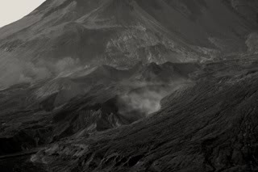
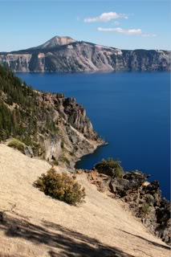
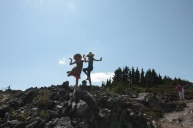
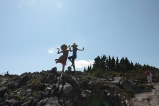

2009-08-31 01:37:13
HDR One Mile Underground, and other pics
I've posted an album page with pictures from my recent road trip amonst the Volcanoes of the west coast. There are nineteen of them located here. Here are a couple of reduced samples of the photos:  I experimented with Ansel Adam's zone system, where you expose for shadows and develop for highlights. In order to get the necessary dynamic range, I bracketed all of my exposures by a couple of stops in either direction.  Many of the photos are HDR tonemapped, using Photomatix.  Some of the photos are taken a mile underground in a lava tube, and painted by Coleman lanterns and flashlights.  Some of the photos are just cute.
Some of the photos are taken a mile underground in a lava tube, and painted by Coleman lanterns and flashlights.  Some of the photos are just cute.
gallery/photography/2009/volcano/crater_lake/lava_tube